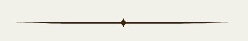

Se non l'avete ancora fatto, vi preghiamo di confermare la vostra presenza compilando il seguente modulo
La destinazione del nostro viaggio di nozze sarà l’isola di Bali in Indonesia!
Partiremo da Roma, atterreremo all’aeroporto di Dempasar. Esploreremo in sella a una moto la città di Ubud,
spostandoci poi con il traghetto nelle isole Gili dove ci godremmo il mare e faremo qualche escursione!
Passeremo gli ultimi giorni a Nusa Dua, punto d’appoggio per visitare il Tempio dell’amore e il sud dell’isola.
Se desiderate farci un regalo potete contribuire a questo intraprendente e memorabile viaggio di nozze
mandando un bonifico con la causale "luna di miele" al seguente iban:
IT37D0503414302000000024397
Intestato a: Gregorio Neri
Oppure, potete contattarci in privato e vi condivideremo la lista di nozze.